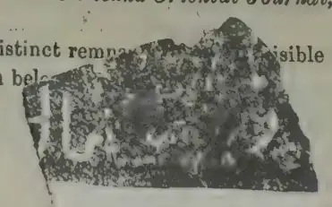
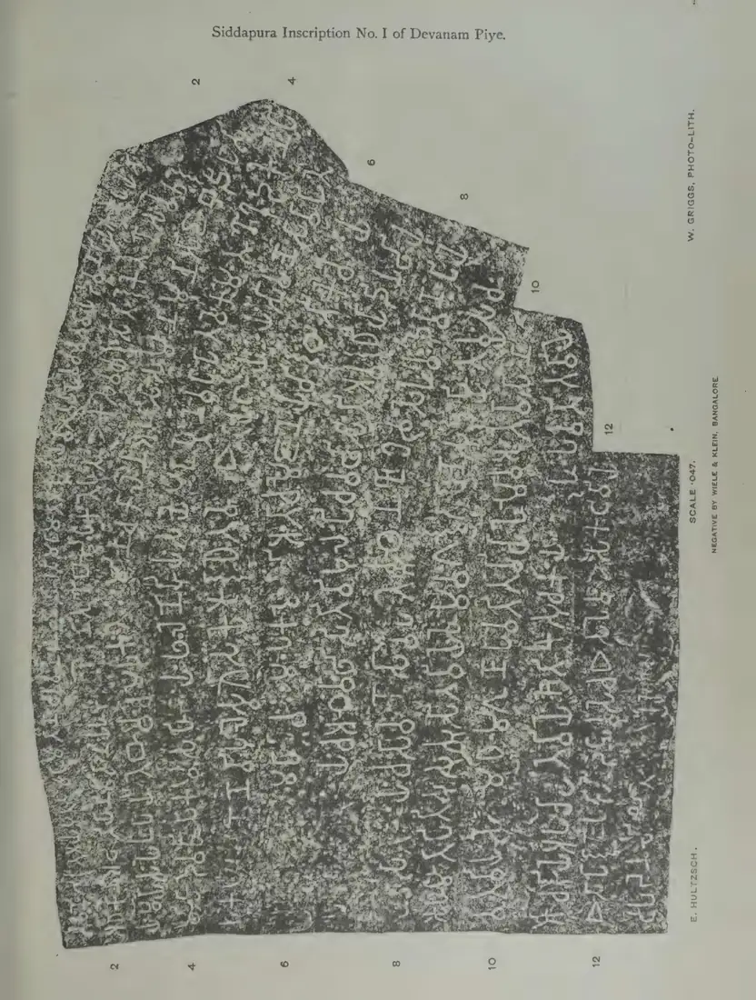
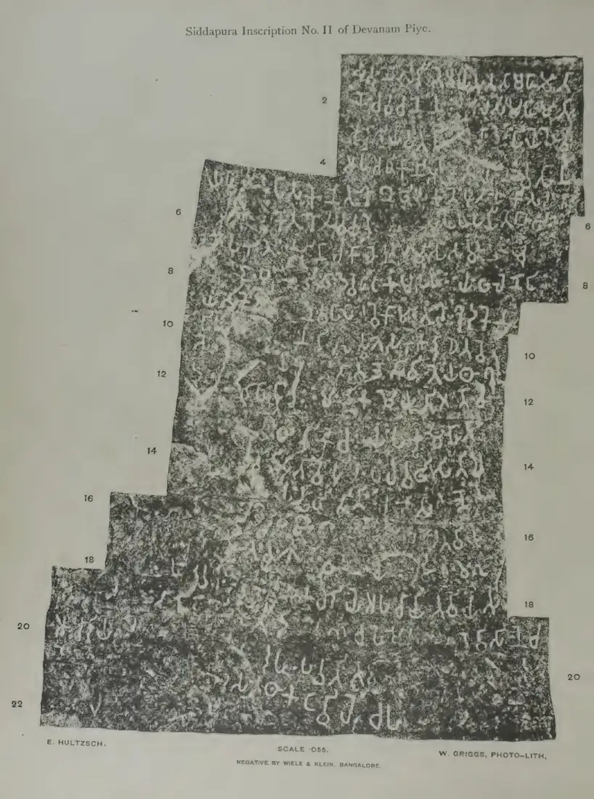
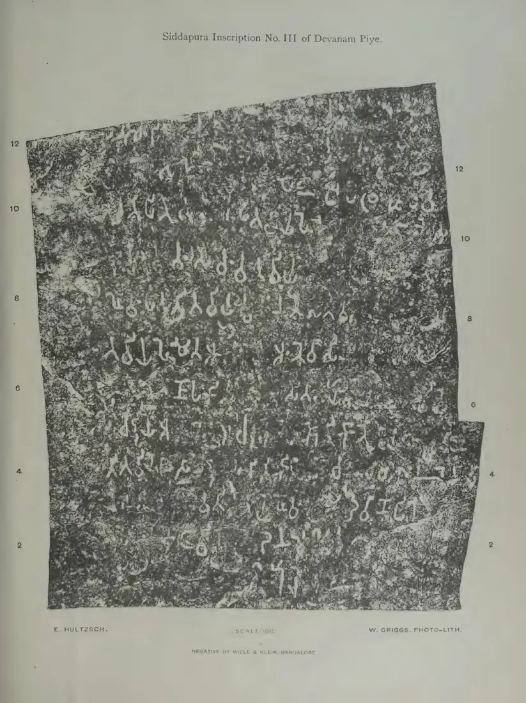

The Siddâpura edicts of Aśôka
THE SIDDAPURA EDICTS OF ASOKA.
By G. BÜHLER, PH.D., LL.D., C.I.E.
The subjoined edition of the three enlarged versions of Asôka's New Edicts, discovered by Mr. Lewis Rice, the indefatigable and successful explorer of the archæological treasures of Mysore, is based on inked estampages, received from Dr. Hultzsch.5 The earlier editions and notices of these documents, which have been used, and to which reference will be made in the sequel, are:— (1) Mr. Lewis Rice's editio princeps, published in his Report of February 1892; (2) M. Senart's edition, translation, and valuable full discussion of No. I. in the Journal Asiatique, 1892, pp. 472 ff. (Notes d'Épigraphie Indienne, No. IV.); and (3) my own short note in the Vienna Oriental Journal, Vol. VII. pp. 29 ff., in which I announced the discovery,— made with the help of a photograph kindly sent by Mr. Rice,— that the last letters of the three
1 This description appears to presuppose the position of the sun at an angle of 45° over the horizon.
2 The same trench formed the boundary in the east; see line 14 f.
3 The Śavaras or Śabaras (Sauras) are the savage aborigines of the Gañjâm and Vizagapatam districts. A Śabara or Śavara chief Udayana is referred to in the Udayèndiram plates of Pallavamalla and in an inscription at Sirpur on the Mahânadi; see Dr. Fleet's Gupta Inscriptions, p. 293.
4 On the title bhôgika see Dr. Fleet's Gupta Inscriptions, p. 100, note 2.
5 [The two accompanying Plates are prepared from a duplicate set of inked estampages.— E. H.]
inscriptions belong to the Northern or Kharôshtrî alphabet, and that the last sentence gives the name of the writer.
The inscriptions are incised on three different rocks in the neighbourhood of the village of Šiddâpura, which is the head-quarters of a sub-division of the Molakâlmuru tâlukâ of the Chitaldroog district in the Mysore state. On their exact position, size, and state of preservation see Mr. Rice's Report, pp. 1-3. With respect to their palæography I would make the following additions to his remarks (op. cit. p. 3):—
1. The type of the letters comes nearest to those of the Girnâr version of the Rock-Edicts; where, in particular, we have the same wavy ra, and the same contrivances for expressing groups with ra, which appear in prânesu drahyitavyaî (No. I. l. 9), as well as pta, which must be read tpa. And it may be noted that, in later times too, a similar close connection is observable between the letters of the epigraphical documents from Gujarât or Kâthiâvâd, and those from the south of India. The land-grants of the Traikûtakas, of the Gurjaras, and of the rulers of Valabhî all show characters of the Southern type.
2. The particular uncouth form of ma, with its abnormally large upper limbs, re-occurs in the inscriptions on the crystal prism from the Bhattiprôlu Stúpa.
3. The â-stroke, turned upwards, to which Mr. Rice calls attention, occurs also in the Kâlsî version of the Rock-Edicts and elsewhere. In addition, the curious â-stroke, bent downwards at the end, in ñâtikesu (No. I. l. 11) deserves to be mentioned. I do not remember any other sign exactly like it in the old inscriptions. There are also a few other letters, resembling those in the later inscriptions, e.g. the cursive a in amisâ (No. I. l. 3), and the tu in No. I. l. 4. With respect to the e of ekaî (No. I. l. 2), which consists of two strokes only, I should say that it has been left incomplete by accident, because it is the only letter of its kind. Every other e has three strokes.
4. The first numeral sign is indeed, as Mr. Rice states, partly different from those found in the Sahasrâm and Rûpnâth versions, and this difference furnishes further proof for the assertion that local varieties of the Southern alphabet existed in the times of Aśôka, and that hence this alphabet must have had a longer history.
Finally, I have to point out that the Northern or Kharôshtrî letters exactly agree with those of the Mansehra and Shâhbâzgarhî inscriptions. The peculiar colophons of each of the three inscriptions prove beyond doubt that the manuscripts of all three were written by the same scribe, Pađa. Nevertheless, there are some verbal differences in the texts, as well as omissions and erroneous repetitions. The latter two kinds of mistakes occur exclusively in Nos. II. and III. and are more numerous in No. III. than in No. II. It almost looks as if Pađa had written No. I. first and then had become tired of recopying the documents. The verbal differences like hevaî âha (No. II. l. 3) instead of ânapayati (No. I. l. 1), and sâvite (No. II. l. 11) instead of sâvâpite (No. I. l. 5) are just such as the clerks and copyists of modern India are very apt to introduce. The use of the two alphabets probably indicates that Pađa was proud of, and wished to exhibit, his accomplishments. In fact, his winding up with lipikarenâ in Northern characters reminds one of a trick of schoolboys, who sometimes sign their books in Greek or other foreign characters. The use of the Northern characters may further be taken to indicate that Pađa once served in Northern India, where the Kharôshtrî alphabet prevailed; for it is even now most unusual to find professional writers who know other alphabets than those used in their native districts, while the epigraphical evidence available at present is not favourable to the assumption that the Kharôshtrî alphabet was commonly known all over India.
The language of the inscriptions offers, it would seem, a mixture of North-Eastern and Southern forms. To the dialect of Magadha belong the substitution of e for Sanskrit as (e. g. in girîte and piye), the word munisâ, and perhaps also chu. With the peculiarities of the Southern Prâkrit agree the use of ra, instead of which the ancient Mâgadhî would have required la,
the word mahâtpa, and perhaps the frequent change of the dental na of suffixes to na, e. g. in devânaîn, mahâmâtânaîn, pakamamiñena, sâvane. The mixing of the two dialects is probably due to the fact that the edicts were drafted in an office where a royal prince and high officials from Magadha presided over a number of subordinates who were natives of the South. The fact that Paça uses in No. I. (l. 9) sachaîn, and in the corresponding passage of No. II. (l. 17) sachaîn, in my opinion conveys the lesson that in Asôka's times, just as now, most, if not all, Prâkrit dialects possessed two sibilants, which the uneducated and the half-educated classes, to which latter the professional writers belonged and still belong, used promiscuously in the same words. The vacillation is just the same as when the inhabitants of Gujarât say in one sentence ê șum kahê chhê ("what does he say?"), and in the next tamê șum kahyuîn ("what did you say?"). Similar instances of laxness in the use of the palatal and dental sibilants may be observed in most parts of India, and this laxness is at the bottom of the frequent interchange of the signs for the sibilants in some versions of Asôka's Edicts, where, of course, sha and șa must both be taken to mark the palatal sibilant.
The dictionary of the Asôka inscriptions receives quite a number of additions through the second part of these inscriptions and through the sentence which serves as introduction to both. It must be noted that the introduction certainly did not come from the Imperial Secretariat at Pâtaliputra. It is just possible that the second portion, too, which as yet has not been discovered elsewhere, may have been drafted at Suvamânagiri and may furnish the Ayaputa's view of the essentials of Asôka's Dhaîmma. The difference in the origin would naturally account for the difference in the language.
Irrespective of the fact that the Șiddâpura inscriptions with their summary of the well-known Dhaîmma make the position of those more difficult, who contend that Asôka-Priyadarșin is not the author of the New Edicts,—their great value lies therein that they prove a portion of the Dekhan table-land to have belonged to the Maurya emperor. This has been generally recognised. But I must repeat what I have already stated in the Vienna Oriental Journal, víz. that this news did not come quite unexpectedly to me. Ever since the late Dr. Bhagvânlâl found a piece of the eighth Rock-Edict near Supârâ in the Thânâ collectorate, I felt convinced that the Mauryas had held the whole of Gujarât and of the Koîkan. The former province must, of course, have been conquered, if its southern continuation was subject to the ruler of Pâtaliputra. And to the conquest of the whole Koîkan by the Mauryas points the fact that, in the 7th century A.D., Pulikêșin II. found there Maurya chieftains or kings whom he ejected or subjected. As the ancient Maurya emperors sent their sons as vicefoys into the provinces, it might easily happen that, on the overthrow of the central government, one or the other of the princes, serving in the remoter districts, managed to save something out of the wreck and continued the name of the dynasty in an out-of-the-way place. It is in this way, I think, that we have to explain the existence of Maurya rulers in the Koîkan and in Râjputânâ during the 7th and later centuries. Finally, the occupation of portions of the Dekhan seemed probable to me partly on account of the Buddhist legend of a mission to Mahishamandala or Mysore during Asôka's reign, and partly on account of the frequent occurrence of the family name Môrê, i.e. Maurya, among the peasants, landholders and other inhabitants of various portions of the Dekhan,1 which circumstance, it seems to me, must be explained in the same manner as the survival of the names Chalkê or Shelkê, i.e. Chalukya; Shendê, i.e. Sinda or Sèndraka; Sêlâr, i.e. Șilahâra; and so forth. Mr. Rice's important discovery has now made all speculation unnecessary. But these points deserve mention as corroborative evidence, especially for Mr. Rice's view that Asôka had direct control over the Mysore territory. This is also suggested by some other considerations.
1 See the Bombay Gazetteer, Vol. XVIII. pp. 285 and 325; Vol. XIX. p. 75; Vol. XXI. p. 110. In the second passage it is asserted that the Mauryas once ruled in the Dekhan.
The Śiddâpura edicts were sent to Isila from an office, presided over by an Ayaputa and Mahâmâtas. This scheme of government corresponds exactly to that, which, as the second Separate Edict of Dhauli teaches us, was adopted in Tôsalî, where a Kumâla and Mahâmâtas ruled, to all of whom the edict is addressed. The natural inference is, therefore, that of Mr. Rice, who takes Ayaputa to be an equivalent of Kumâla, while M. Senart's supposition that the Ayaputa is a local chief (op. cit. p. 494; Notes, p. 27) appears more far-fetched. And it is not difficult to show that ayaputa may be used in the sense which Mr. Rice attributes to it; for the St. Petersburg Dictionaries adduce passages in which the corresponding Sanskrit word âryaputra means 'a prince.' Moreover, in Dr. Bhagvânlâl's Kaṭak inscriptions,1 Nos. I. and III., the kings Khâravêla and Vakadêpa receive the epithet aira,2 i.e. ârya (aya), and in the Nâsik cave-inscription No. 15,3 king Pulumâyi is indicated by the word maha-airaka, i.e. mahârya. Hence airaputa or ayaputa might indeed be used for 'a king's son.' It may also be urged that, if the Ayaputa had been a mândalika or padêsika, as Asôka himself calls the local chiefs, the ministers would not be mentioned as sending their orders together with his. Such a proceeding would be against all etiquette. On the other hand, the position of a prince, sent out as a viceroy, was probably not an independent one. The distrust and the jealousy of the father and sovereign no doubt surrounded him with high officials, possessing almost, if not quite, the same powers, in order to watch, and, if necessary, to check him. Finally, we also quote the circumstance that Paṣa, one of the writers in the Ayaputa's office, presumably had acquired his knowledge of the Kharôshṭrî characters while serving in Asôka's northern possessions.
The extent of Asôka's possessions in the Dekhan cannot as yet be ascertained. But it may be considered as certain that they included more than the northern extremity of Mysore, and I believe we may venture on the guess that they extended into the Bombay presidency and that the conquest of the Dekhan had been made by governors of the Koñkaṇ, after the annexation of the latter district. In the direction of the Western Ghâts I would also look for Suvamṇagiri, the head-quarters of the viceroy of the Dekhan. If it still exists, it will now go by a name like Sôngir or Sôngadh, Sôndurg, Suvarṇdurg, or the like.
The three versions furnish in my opinion no great assistance for finally settling the most difficult problems connected with the New Edicts. They confirm, it is true, the view of Professor Oldenberg who, years ago,4 contended that, in the Rûpnâth Edict, adhatiyâni ought to be read, instead of adhitisâni, as I had done. But this is also highly probable according to a new impression of the Rûpnâth version, made over to me by Dr. Fleet, according to which I shall publish a new transcript in the Indian Antiquary.5 The reading adhatiyâni, as a matter of course, makes it necessary to give up the assumption that the statements of the inscription regarding the time of Asôka's conversion to Buddhism agree with those of the Buddhist tradition. The Beloved of the gods says, not that he was a lay-hearer for more than thirty years and a half, but for two years and a half. Again,—and this is a point not yet recognised,—he does not say that he "approached or entered the Saṅgha" more than a year ago, but more than six years ago. When I wrote my first articles, I had not seen that the apparent i above va is the upper part of a ṣa, and hence read in the Sahasrâm version saviṅchhale, instead of saṣvachhale, i.e. shaṣvatsaram. Moreover, misled by the imperfect facsimiles, I believed that mistakes like chha for sa were common in Asôka's Edicts. Hence, I unhesitatingly corrected in the Rûpnâth Edict the inconvenient chhavachhare, i.e. shaṣvatsaram, 'a period of six years,' to
1 Actes du Sixième Congrès International des Orientalistes, Vol. III. Part II. p. 152.
2 Misread vera by Dr. Bhagvânlâl, who, in objecting to a Prâkrit diphthong ai, had apparently forgotten the existence of the form thaira and similar ones.
3 Rep. Arch. Surv. West. Ind. Vol. IV. p. 111, and p. 112, note 1.
4 Zeitschrift der Deutsch. Morg. Ges. Vol. XXXV. pp. 473 ff.
5 [Vol. XXII. pp. 299 ff.]
savachhare, 'one year.' The correct total of the period during which the Beloved of the gods declares himself to have been connected with the Buddhists, is thus about nine years. With respect to the other, equally or perhaps more important question, who the Vyātha or Vivutha was and to what the numerals refer, the Śiddāpura inscriptions yield, as far as I can see, no positive results. I shall discuss these problems again in the Zeitschrift der Deutschen Morgenländischen Gesellschaft, and will note here only this much, that I still take the Vivutha to be the Tathāgata, and still refer the numerals to the number of years elapsed since the Nirvāṇa.
TEXTS.1
No. I.
1 [S]uvaṁnagirite2 ayaputasa mahāmātāṇam cha vachan[e]na I[si]lasi mahāmātâ ârogiyam vataviyâ hevam cha vataviyâ [||*]
First Edict.
Devāṇam piye ânapayati [|*]
2 Adhikân[i] adhâtiyâni [va]sâni ya hakam . . . no tu kho bâdham pakamte husam [|*] Ekam savachharam sâtireke tu kho sa[m]vachhar[a]m3
3 yam mayâ Saṅgho upayîte bâdham cha me pakamte [|*] Iminâ chu kâlena amisâ samânâ munisâ Jambudipas[i]
4 misâ devehi [|*] [Paka]masa4 hi iyam phale [|*] No hîyam sakye mahâtpeneva pâpotave [|*] Kâmam tu5 kho khudakena pi
5 paka[mami]neṇa6 vipule svage sakye ârâdhetave [|*] E[t]âyathâya iyam sâvane sâvâpite [|*]
6 . . . mahâtpâ cha imam pakame[yu] . i7 amîtâ cha mai8 jâneyu chirathitîke cha iyam
7 pa . . . [|*] Iyam cha athe vadhisiti vipulam pi cha vadhisiti avaradhiyâ diyadhiyam
8 [vadh]isit .9 [|*] Iyam cha sâvaṇ . sâv . p . te Vyûthena 256 [||*]
Second Edict.
Se hevam Devāṇam piye
9 âha [|*] mâtâpitisu susûs[i]taviye10 [|*] Hemeva garut[vam]11 prânesu drahyitavyam [|*] Sacham
10 vataviyam [|*] Se ime dhaṁmaguṇâ pavatitaviyâ [|*] Hemeva amterâsinâ
1 From inked estampages, received from Dr. Hultzsch.
2 The sa is mutilated on the right, but the u-stroke is distinct.
3 Possibly savachharam, as the indentation, taken for an anusvâra, is rather irregular in its outlines.
4 The first syllable is damaged, but not pâ, as the photograph might seem to indicate.
5 The ta consists here of a semicircle, open below, and a vertical standing above it, in accordance with the practice prevailing in much later inscriptions.
6 Only the upper portions of the two ma have been preserved, and the second very imperfectly.
7 The yu is faintly visible on the impression. Read ti.
8 Read me.
9 The lower portions afone of vadh have been preserved.
10 The impression shows faint traces of the vertical stroke of the vowel i.
11 The impression shows traces of a probably angular sign which was attached to the lower right of the ta and of the anusvâra. There is thus a presumption that the reading was garutyam; but garutam is not absolutely excluded.
Plate 1 is bound after this page.
Plate 2 is bound after this page.
11 . áchariye apachâ[yi]taviye nâtikesu cha k[u?]1 ya[thâ]raham2 pavatitaviye [|*]
12 Esâ porânâ pakitî d[igh]âvuse cha esa hevam esâ katîviye3
13 cha [||*] Padena li[kh]it[aim] lipikarena4 [||*]
No. II.
1 [S]uvainnagirîte5 ayaputasa mahâmâtâ-
2 ñam [cha va]chanena I[s]ilasi mahâmâtâ
3 ârogiyam vatavi[yâ]6 [||*]
First Edict.
4 âha [|*] Adhikâni a[dh] t y [. i] vasâni
5 ya ha . [u]pâsake no tu kho bâdha [pakam]te husam [|*] Ek[am]
sâmva . . .
6 [sâ . i] ke7 tu kho samvachhare [yâm] . . . ghe upa[y]îte
bâdham
7 [cha me pakam]te [|*] Iminâ chu kâle[na] . m[i]sâ samâ . mu-
8 . . Jambud . . . [m]isâ devehi [|*] Pakama[sa] hi iyam phale [|*]
No hi-
9 ya s[ak]e . . . n[eva] pâpo[ta]ve [|*] Kâmam tu kho khudakena
10 pi pa . . . na vi . ul . svage sak . ârâdhetave [|*]
11 Se . . . ya [i] . . âm sâvañe sâvite [|*] Yathâ khu-
12 da . . mahâtpâ cha imam [pa]kameyu ti amtâ cha
13 . . . . thitîke cha iyam pakame hot[u]8 [|*]
14 . . . . va[dh]i[s]iti v[i]pu . am p[i] cha vadhisiti a-
15 . . . . yam vadhisiti [|*] I . âm [cha] sâ[ya]ñe
16 . . . . [||*]
Second Edict.
17 . . . . . taviy[e]9 [|*]
[hyi]tavyam [|*] Ša[cha]m va . . yam [|*]
Im . dhammagu-
18 . . . . [|*] H . m . . . . [âcha]riye apachâyi-
taviye su10
1 This reading is not absolutely certain. The stroke which I interpret as a u, is attached to the lower left side of the consonant. The blot taken by others for an anusvâra is very irregular in its outline.
2 The circle and the central dot of thâ are faintly visible on the impression; compare the much plainer thâ in line 20 of No. II.
3 Read katâviye.
4 Written in Northern or Kharôshtrî characters. The apparent semicircles below the last signs are not connected with the letters, and are mere flourishes.
5 The first syllable is damaged, but unmistakable. The impression leaves no doubt that the lines near the top of the consonant, which have induced others to read si, are accidental.
6 Deceived by the double vataviyâ, the writer has omitted vataviyâ cha hevam before this word.
7 The signs sâ . i are faintly visible on the impression.
8 The reverse of the impression shows the u-stroke of hotu, and proves that the apparent i-stroke in the same syllable is due to an accidental fissure.
9 The lacuna in line 16 is a small to have contained the whole text of the version of No. I. Some indistinct signs are visible before tav
10 This is probably th.
| 19 | . . . . . | sâ | porân | . . . | tî | dî[ghâ]vu[s . ] | cha |
| heme[va . te]vâsine | cha | ||||||
| 20 | âchariye | . . . . . | . . . . | thâraham | pavatitav | . . . | |
| 21 | . . . . . | esa | [ta]thâ | kataviye | cha | [||*] |
Pa . . . .
22 . . . . na2 [||*]
No. III.
First Edict.
| 12 | . . . . | . . . . | . . . . | . . . . | . . . . |
| 11 | . . . . | . . . . | . . . . | sa (?) | . . . . |
Second Edict.
. . . . v . pulam pi .
. the[na] 256
v . v . (?) .
10 . . . tāpitusu . . [si]ta[vi]ya he . e. . . . à. esu
9 . [hy. ta]v . am sacham vataviyam e . . . . .
8 hevam pa[va]titaviyâ3 ? ? am na te s. t. va . . . . .
7 . . . taviya hemeva â[chariye] amtevâsi[nâ] . . . . .
6 . . . [r]ânâ paki . . . sita[v]iya . . . i[v]e
5 . chariy. am . . . [â]cha[riy. śa] nâtikâ te . . . . .
4 . . titaviye esâ . râ . [pak]iti di . â . cha . . . . śa . e . â
3 . . . . . vati . . ye hevam [m]e Devânam pi[y]e
2 . . . . . kataviye . . đena4 [likhit]am
1 . . karena5 [||*]
TRANSLATION OF No. I.
The officials in Isila must be wished good health and be addressed thus from Suvarṇagiri [1]6 (Suvarṇagiri) with the words of the Prince and the officials (residing there):—
First Edict.
“The Beloved of the gods issues (these) commands:— [2] More than two years and a half [3] (have elapsed), since I (became) a lay-hearer; but, indeed, I did not exert myself strenuously. One period of six years,— [4] but indeed more than a period of six years, (has elapsed), since I have entered [5] the community of the ascetics (and) have strenuously exerted myself; but during this time the men who were (considered) true in Jambudvipa, (have been made to appear) false together with the gods. [6] For this is the result of exertion. For, this cannot be attained by a great man alone. But in any case, [7] indeed, even a small man, who exerts himself, can gain for himself much heavenly bliss. For this purpose this sermon

W. GRIGGS
1 Lines 19 (second half), 20, and 21 (beginning) seem to have contained needless repetitions.
2 The ṇa is in the Northern character.
3 As far as this word, the text of the second edict seems to have been in good order. The following five lines exhibit a great confusion. The copyist seems to have repeated the same sentences twice or even three times.
4 The de is somewhat abnormal and looks almost like a mutilated da, for which I mistook it when writing the note in the Vienna Oriental Journal, Vol. VII. pp. 29 ff. The space between ye and de looks too small for two letters, and remnants of one only are visible. It seems, therefore, probable that there was no cha after kaṭaviye, and that the idea of reading the name Chapada, mentioned as possible in the Vienna Oriental Journal, Vol. VII. p. 32, must be given up.
5 This is written in Northern or Kharôshtri letters. Indistinct remnants are visible to the right of ka.
6 The figures within crotchets refer to the remarks given below.
Plate 3 is bound after this page.
has been preached :—“ Both small men and great men shall exert themselves to this (end),”[8] and even my neighbours [9] shall know it, and this exertion shall be of long duration. And this matter will grow, and it will even grow largely, at the least it will grow one size and a half. And this sermon has been preached by the Departed, 256 [10] (years ago).”
Second Edict.
“ Even thus [11] speaks the Beloved of the gods :— Obedience should be rendered to mother and father. Moreover, the respect for living creatures should be made firm,[12] the truth should be spoken. Even these virtues prescribed by the sacred law should be practised. Moreover, the pupil should honour his teacher, and towards blood-relations one should indeed [13] behave as is due to them. This is the ancient standard (of virtuous conduct), [14] this concludes to long life,[15] and this should thus be performed.”
Written by Pađa the scribe.
REMARKS.
1. Possibly the termination tē (tas) has here the sense of the locative, in accordance with the maxim of the Sanskrit grammarians, declaring the affix tasi may serve to express any case-relation. If so, the translation has to be altered slightly. In addition to the parallel passages mentioned by Mr. Rice and M. Senart, the second line of the Nâsik inscription No. XI. B (Rep. Arch. Surv. West. India, p. 106) ought to be compared, where we read:— raño Gotamîputasa Sâtakañisa mahâdeviya cha jîvasutâya râjamâtuya vachanena Govadhane Sâmako droga vatavo tato eva vataïo. Regarding the meaning of ayaputa see the introductory remarks.
2. The second version has :— “ The Beloved of the gods speaks thus.”
3. Ađhatiya is, in Sanskrit, not ardhatritya, as Mr. Childers asserts, but ardhatraya.
4. Savachhara or samvachhara would have to be translated by ‘ a year,’ but for the variæ lectiones of Sahasrâm,— sadvachhale (formerly misread sayimchhale), and of Rûpnâth, chhavachhare, which both correspond to the Sanskrit shadvatsaram. Instead of sad (compare also saduvîsati, Pillar-Edicts I-VI.), sa or sam may, of course, be used, the following consonant being doubled; compare sapanâla in the Sahasrâm Edict, and â-sam-mâsike, Pillar-Edict V.
5. Upayîte, upayîte, or up . te, i.e. upêtah, is the reading of all the versions. Up . te is plain in the facsimile of the Rûpnâth version, where formerly I read wrongly papîte. As Asôka contrasts here the period yam·mayâ samghe upayîte with that when he was upâsake, ‘ a lay-worshipper,’ it appears that the phrase means that he had entered the Samgha, and had become, at least nominally, a monk; compare the Sanskrit phrases yajñam, vratam, or brahmacharyam upa-i. The Sanskrit translation of the passage is: yan mayâ samgha upêtô bâdham cha mayâ prakrântam. The prothesis of y in yîta for ita, i.e. ita, may be compared with that of v before u in vuchchati, vutta (upta), and so forth. It is common before é in Marâthî words, e.g. yêk for êka, yêranđa for êranđa, etc.
6. I do not think it either permissible or necessary to change, as M. Senart does, the word devehî, which occurs in two versions; for the passage gives a good sense if devehi is taken as equivalent to dêvaih saha, as certainly may be done. With this explanation, the transliteration into Sanskrit would be: Étêna tu kâlênâmrishâ santô manushyâ mrishâ [kritâh] dêvaih [saha]. The general meaning is that those men who were considered to be true, i.e. true prophets and instructors, like the ascetics and Brâhmanas teaching the Vaishnavas, Śaivas, and other sects, were deprived of their high position by the efforts of Asôka and lost the confidence of the people, and that their gods fell with them. The Rûpnâth Edict says, l. 2:— Yi imâya kâldya Jambudipasi amisâ devâ husu te dâni masâ katâ, and distinctly asserts the overthrow of the Brâhmanical deities. Here we have the very natural assertion that the prophets and teachers fell in the estimation of the people together with their gods. The question whether the Sahasrâm
Edict agrees with the Rûpnâth version or with that of Śiddâpura, or if it tells us something still different, as M. Senart thinks, will be discussed on another occasion. I, of course, admit that M. Senart is right in rejecting Dr. Bhagvânlál's conjectural emendation husam te for santa, which, in 1877, I inserted in my text. I now believe that santa does not require any alteration.
7. Kámam, 'in any case,' may also be translated by 'at his desire.'
8. The sermon which is spoken of here and at the end of this section, consists only of the six words beginning with khudaká cha and ending with pakameyu ti, and it does not, as I thought formerly, go as far as diyaḥhiyam vaḥhisiti. The ti after pakameyu proves the correctness of the former statement. The use of an additional pleonastic yathá in No. II. at the beginning of the sentence is in accordance with classical Sanskrit usage; see the examples quoted in the larger St. Petersburg Dictionary under yathá.
9. The correct explanation of aṭitá has first been given by M. Senart. If further proof were needed, it is furnished by the additional mai, i.e. me, of our version.
10. As stated already in the introductory remarks, I still believe the word Vyátha to refer to Gautama-Buddha, and the figure to the number of years elapsed since the Nirvāna. But I now admit that Vyátha-Vivutha may be derived from vivas, and I take it as representative of Vyushṭa. The verb vivas occurs indeed not rarely in the sense of 'to elapse, to pass away;' see, e.g., Gôbhila's Grihyasútra, ii. 8,—jananád daśarátrê vyushṭê, which Professor Oldenberg renders correctly: "When ten nights have elapsed after (the child's) birth;" and Pañchatantra, ii. p. 25, l. 11 (Bombay S. Ser.),—anéna várttávyatikaréna rajanî vyushṭá.
11. The correct beginning of the second edict has been first recognized by M. Senart.
12. Garutva, which (if the correct reading) is analogous to the form stadatva (Rock-Edicts, Kálsí, X.), can of course be used like gaurava1 in the sense of 'respect for.' Drahyitavyam is the future passive participle formed from the stem of the present drahyati, which corresponds to the Sanskrit drihyati. It may be noted that the Páli dictionary does not give any representative of the Sanskrit verb drih, though the participle daḥha and its derivatives show that one must have existed.
13. If the reading ku is the correct one, the word must be taken as a representative of khu or kho; compare the Sháhbâzgarhí version of the Rock-Edicts, IV. 9, etc.
14. Pakitî has here either the meaning of svarúpa or of yóni, which the Sanskrit prakriti has so often. Dharmasya or áchárasya must be understood.
15. Compare Manu, ii. 121:—Abhívádanaśilasya nityam vriddhôpasévinah | chatvári tasya cardhanta áyur vidyá yaśó balam || and the parallel passages quoted in the Synopsis to my Translation.
1 See the passages quoted in the two St. Petersburg Dictionaries.



W. GRIGGS
(printed on p. 140)